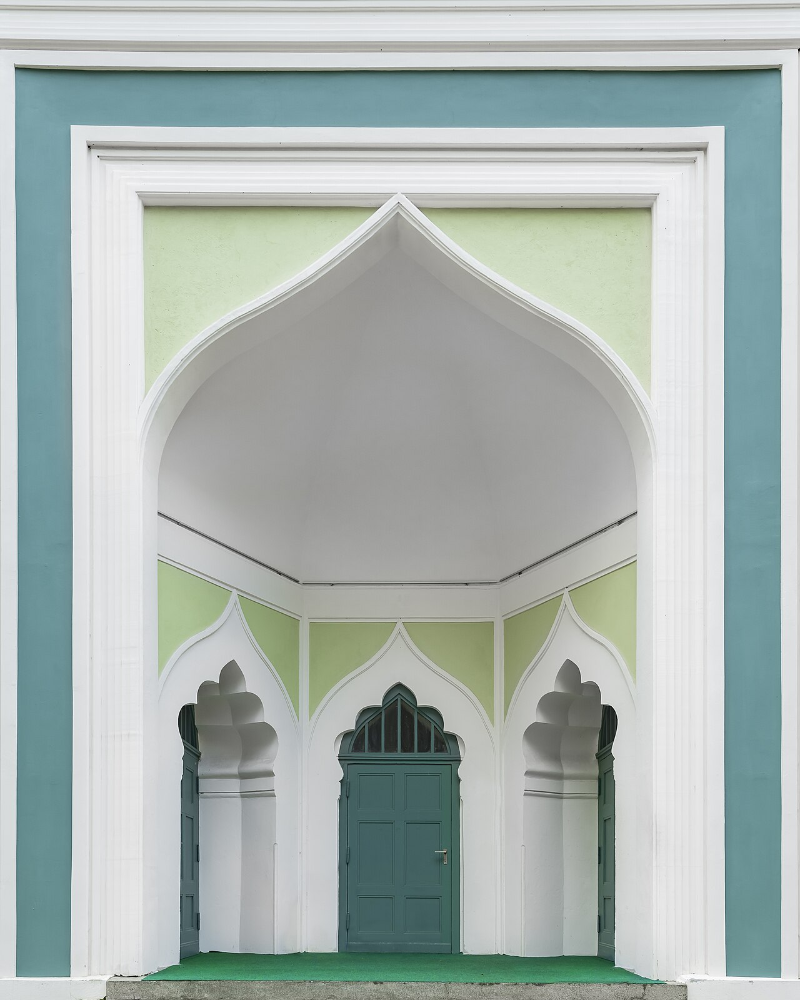
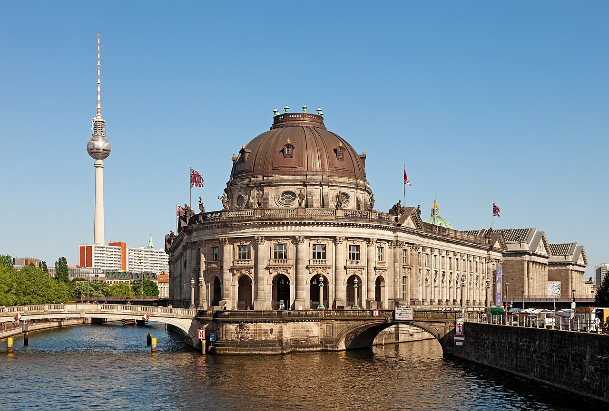
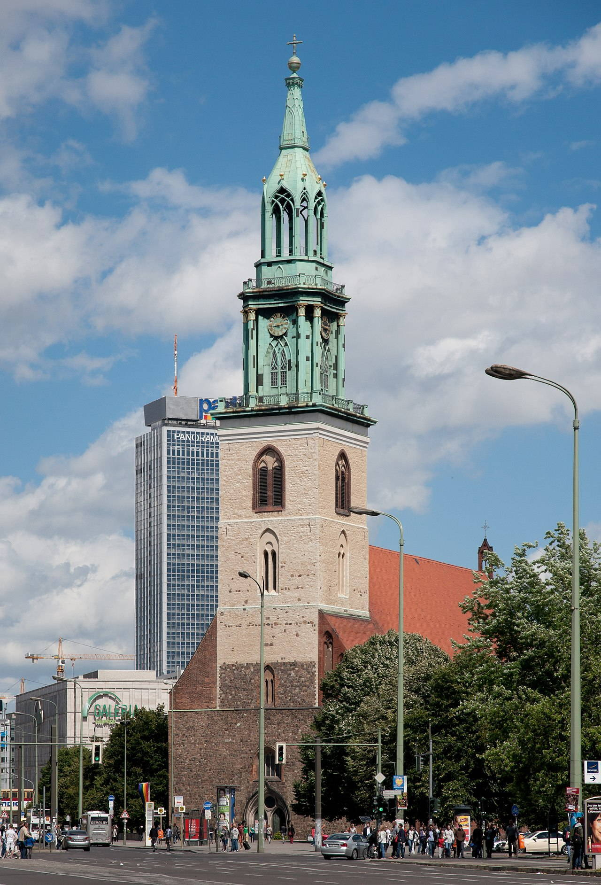
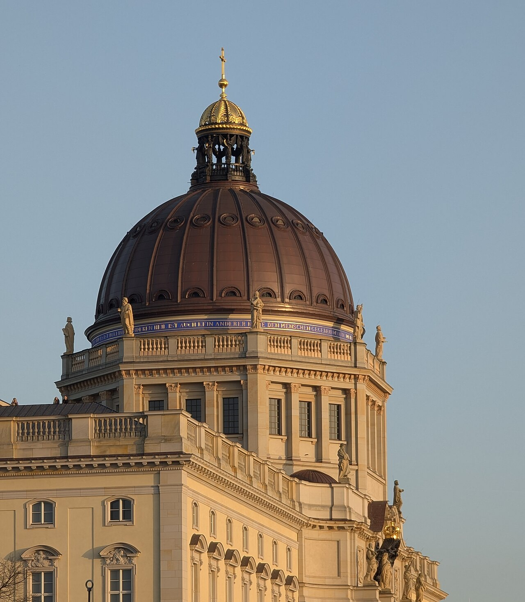

Исторические и справочные гербы


Berlin
Путеводитель. Объектов в этом выпуске: 42.
OTIUM — практика нарочитого досуга. В античном смысле otium — не побег от работы, а время, когда внимание возвращается к памяти, пейзажу и мысли — без прикладного дедлайна.
Мы выстраиваем маршруты для неспешного присутствия, а не для чек-листа достопримечательностей: важно быть в месте, а не «потреблять» виды.
OTIUM — не туроператор. Это приглашение пройтись, остановиться и оставить маршрут незавершённым, если свет на фасаде заслуживает ещё минуты.
Исторические и справочные гербы
Путеводитель. Объектов в этом выпуске: 42.
Берлин — столица Германии, крупнейший город страны и исторический центр прусского и европейского модерна.
От торгового поселения к резиденции курфюрстов и королей, через XX век с разделением и воссоединением, Берлин сохраняет память о войнах и мирных преобразованиях. Сегодня это город музеев, театров и многоязычной культурной сцены.
После 1990 года восстановлен центр, перенесены органы власти ФРГ; город стал ареной крупных культурных форумов. Берлин привлекает стартапы, исследовательские центры и мигрантов со всего мира, сохраняя память о Холодной войне и европейском единстве.
141227 Berliner Dom.jpg

Schloss Bellevue

White classical palace in a park—official residence of Germany’s Federal President (not the chancellor).
Built as a summer palace in the 1780s; spared heavy damage; restored as ceremonial head-of-state home.
Quiet photo stop along Tiergarten walks from the Siegessäule.
Berlin 4728.jpg

Aquarium Berlin

Berliner Dom

Massive Protestant cathedral with a copper-green dome overlooking the Lustgarten and Museum Island.
Hohenzollern court church rebuilt after 1894 in Historicist style; heavily damaged in 1944, restored after reunification.
Major concert venue, baptisms of princes in the past, and a climbable dome gallery.
Berlin Hauptbahnhof

Glass cross-shaped terminus on multiple levels—main rail hub since 2006 north of the government quarter.
Replaced older Lehrter Bahnhof footprint; engineering feat spanning regional, ICE, and S-Bahn lines.
Practical gateway with shops and views of the river Spree.
Berlin Museumsinsel Fernsehturm.jpg

Berliner Fernsehturm

368-metre GDR-era needle with viewing sphere and revolving restaurant—dominant on the skyline.
Completed in 1969 as a prestige project; still operated as a broadcast tower and observation attraction.
Orientation landmark visible from many Berlin districts.
Gedenkstätte Berliner Mauer

Zoologischer Garten

Berlinische Galerie

Bode-Museum

Museum Island temple to sculpture and Byzantine art—domes and steps face the Spree toward the TV tower.
Opened as the Kaiser-Friedrich-Museum in 1904; renamed for curator Wilhelm von Bode; part of the UNESCO island ensemble.
Masterpieces from medieval Europe through Italian Renaissance bronzes.
Brandenburger Tor

Neoclassical city gate crowned with the Quadriga chariot—now a pedestrian symbol of reunification between East and West.
Completed in the 1790s; the Quadriga was removed and restored several times across wars and partitions. The gate stood closed in the Wall era.
Default meeting point for visitors and stage for major public events.
Schloss Charlottenburg

Baroque and rococo palace with formal gardens and the Belvedere tea house—Berlin’s largest Hohenzollern residence.
Begun as a summer lodge for Sophie Charlotte in the late 17th century; wings and theaters grew through the 18th century.
Art collections, porcelain rooms, and park walks away from downtown crowds.
Checkpoint Charlie

Former Allied crossing booth, now a busy corner with exhibition cabins and outdoor photo ops of the barrier replica.
Cold War flashpoint of tank standoffs and escapes; commercial signage competes with education today.
Icon of divided Berlin—inform yourself at nearby Wall exhibitions for depth.
DHM

East Side Gallery

Longest open-air segment of painted Berlin Wall along the Spree—murals by international artists after 1989.
Industrial border strip became a canvas; the “kiss” mural by Dmitri Vrubel is one of the best known images worldwide.
Street-art memorial and riverside promenade.
Futurium

Gendarmenmarkt

Symmetrical square with French and German cathedrals flanking Schinkel’s concert hall—classic Berlin symmetry.
18th-century marketplace for the regiment of gens d’armes; rebuilt after fires with unified façades.
Christmas market location and home of the Konzerthaus orchestra.
Grosser Stern (73584061).jpeg

Berliner Schloss

Jüdisches Museum Berlin

Daniel Libeskind’s zinc zigzag building with void axes—exhibitions on German-Jewish history and culture.
Opened in 2001 beside a former courthouse; rebuilt and expanded with careful landscaping of exile gardens.
Major research museum beyond Holocaust narrative alone.
Kaiser-Wilhelm-Gedächtniskirche

Bomb-scarred belfry beside a modern octagonal church—nicknamed “hollow tooth” for its ruined spire.
Original church consecrated in 1895; RAF raid in 1943 left the tower shell; Egon Eiermann’s 1960s buildings pair with the ruin intentionally.
Peace memorial and busy Kurfürstendamm anchor.
Lustgarten

Mauerpark

Denkmal für die ermordeten Juden Europas

Field of 2,711 concrete stelae on undulating ground; information centre underground explains the project context.
Designed by Peter Eisenman and opened in 2005 after extended debate about form and site.
Central German memorial to murdered European Jews—visit with quiet conduct.
Moschee Wilmersdorf.jpg

Naturkundemuseum

Neue Wache

Oberbaumbrücke

Red-brick double deck for U-Bahn and road across the Spree—Friedrichshain’s favorite sunset silhouette.
Merchant bridge rebuilt in the 1890s; border crossing closed under the Wall, reopened for unified Berlin.
Link between nightlife districts and riverside paths.
Pergamonmuseum

Potsdamer Platz

High-rise cluster of offices, cinemas, and Sony Center’s tent roof—built on empty Wall death-strip land.
Bustling pre-war hub, wasteland after 1961, mega-project in the 1990s as Berlin capital moved back.
Symbol of post-Wall reconstruction density.
Rotes Rathaus

Red-brick Neo-Renaissance seat of Berlin’s city government facing the Neptune fountain toward Alexanderplatz.
Completed in 1869; damaged in war, repaired in GDR era; continues as senate headquarters.
Political heart of the Land Berlin amid sightseeing density.
Reichstagsgebäude

Historic parliament building with Norman Foster’s glass dome—registration usually required to visit the terrace.
Opened in 1894; fire in 1933, wartime ruin, then slow reconstruction; the Bundestag returned after the dome renewal in 1999.
Working seat of Germany’s federal parliament with public access to debate galleries.
Treptower Park

St. Mary's Church - Berlin.jpg

Nikolaikirche

Rebuilt twin-towered church marking Berlin’s medieval core—museum inside explains the city’s founding legends.
13th-century origins; destroyed in 1945; recreated in 1980s East German quarter reconstruction with historicist detail.
Anchor of the tourist Nikolaiviertel lanes and river bridges.
Tempelhofer Feld

The Dome Of Berlin Palace.jpg

Topographie des Terrors

Open-air trench along Gestapo cellar foundations plus documentation centre on SS and police terror.
Excavated Wall strip exposed SS ruins; permanent exhibition since the 2010 building by architect Ursula Wilms.
Free, solemn counterweight to souvenir Berlin Wall stalls.
Tränenpalast

Siegessäule

Gilded Victoria atop a red-granite drum in the traffic roundabout—climbable for a treetop panorama.
Originally sited before the Reichstag for 1860s wars of unification; moved by Nazis deeper into the Tiergarten.
Protest marches historically circle “Goldelse”; today a popular photo stop.